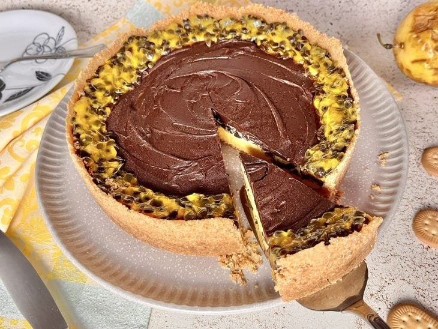
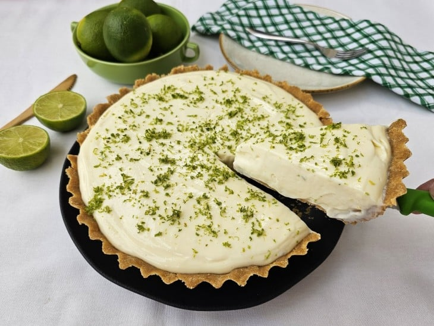
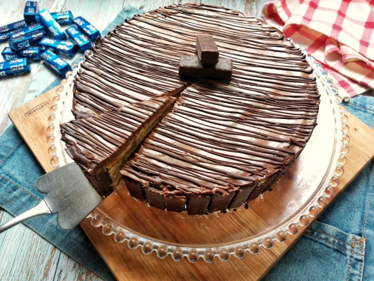
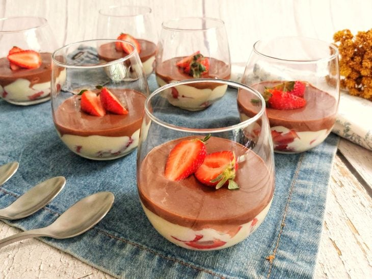

|  |
INGREDIENTES
- 200 gramas de biscoito do tipo Maria
- 100 gramas de manteiga sem sal derretida (1/2 xícara de chá)
- 1 lata de leite condensado (395 gramas)
- 3 gemas
- 1/2 xícara de chá de polpa de maracujá sem sementes (1 a 2 maracujás) (90 gramas)
- 100 ml de creme de leite (1/2 xícara de chá)
- 200 gramas de chocolate meio amargo em pedaços (1 xícara de chá bem cheia)
|
|  |
INGREDIENTES DA MASSA
- 400 gramas de biscoito do tipo maisena
- 100 gramas de manteiga em temperatura ambiente (ou derretida)
- 1 colher de chá de raspas de limão
- 8 colheres de sopa de água
INGREDIENTES DO RECHEIO
- 2 caixinhas de leite condensado
- 2 caixinhas de creme de leite
- 150 ml de suco de limão
- Raspas de limão para decorar
|
|  |
INGREDIENTES
- 2 caixas de Bis
- 1 pacote de bolacha maria
- Café preto coado
- 2 potes de nata ou creme de leite fresco
- 1 caixa de leite condensado
- 1 barra de chocolate ao leite ou meio amargo
- 1 caixinha de creme de leite
|
|  |
INGREDIENTES
- 1 lata de leite condensado (395 gramas)
- 150 ml de leite
- 1 gema
- 1/2 colher de sopa de essência de baunilha
- 1 caixa de morangos picados
- 100 gramas de chocolate meio amargo
- 100 ml de creme de leite fresco
|